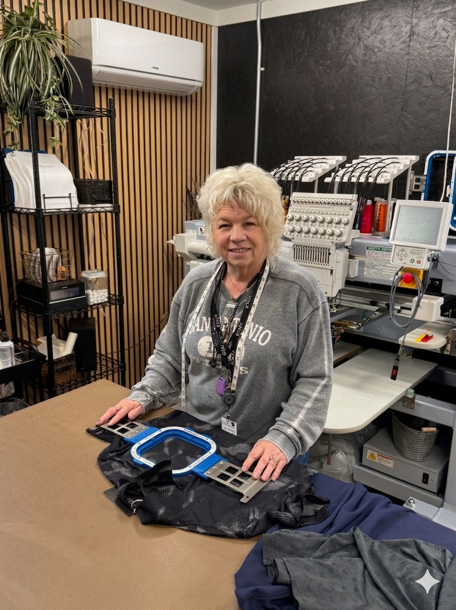

Eighteen years ago, Lois discovered a passion for embroidery that would eventually transform a creative spark into a thriving local business.
What began with a single machine in 2008 and a simple goal—crafting the perfect custom hat—quickly outgrew the kitchen table. Lois eventually opened a dedicated storefront in Downtown Brighton on Grand River, right next to Lou and Carls. While she loved the community energy of the shop, her commitment to the South Lyon and Catholic Central school districts led her to pivot. She brought the business home, converting her garage into a professional, high-capacity studio.
The growth hasn't stopped. From that first machine in 2008 to the addition of a second in 2015, the shop underwent its biggest evolution in 2026 with the arrival of a sophisticated two-head industrial machine. Today, with four heads running simultaneously, Lois combines the personal touch of a boutique home shop with the power to handle large-scale business orders. Built on a foundation of word-of-mouth and impeccable quality, her business is ready for its next chapter.
